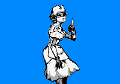

羊毛護衫/Cardigans
S+9600
能力等級：
破壞力D 速度A 射程C 持續力A 精密動作性A 成長性B
能力定位 遠距離輔助型
能力評定：擁有護士身姿的補助系替身。擁有治療他人的能力，此外，也可以直接用醫療器械進行攻擊。
放出和收回替身是一個迅捷動作，你只有在放出替身的情況下才能使用奇跡的技能。控制替身行動會消耗等同于你的動作，即移動動作控制替身移動，標準動作控制替身攻擊。替身的初始射程為敏感范圍。替身使用替身使者的相應數據進行檢定和防御。
替身被視為靈體，只有擁有靈視的人才能看見替身。當替身受到傷害的同時，替身使者也會受到等同于傷害值的沖擊傷害。但是當替身使者受到傷害時，替身不會受到傷害。這意味著替身使者和替身在同一個范圍傷害攻擊下，替身使者可能受到二次傷害。
替身使者具備靈視能力以及正常攻擊靈體虛體的能力。
對于羊毛護衫恢復生命和移除異常狀態，恢復屬性傷害的技能，其醫療點無上限。
羊毛護衫初始自帶【治療】【應急藥物】倆個技能
【治療】：標準動作對替身射程內的一個目標使用，使其每輪恢復8點沖擊傷害/6點嚴重傷害/3點惡性傷害，優先恢復最嚴重的傷害，持續你的醫治專業/分鐘。
【應急藥物】：標準動作對替身射程內的一個目標使用，使其每輪移除3點任意異常點數，這是S級藥物來源的能力，持續你的醫治專業/分鐘。
能力提升：
【全體治療】：D+1000
【治療】的選取目標改為替身射程內的所有友方目標。
【全體應急藥物】：D+1000
【應急藥物】的選取目標改為替身射程內的所有友方目標。
【眼藥】：C+1000
標準動作對替身射程內的一個目標使用，目標獲得A級目盲免疫，持續你的醫治專業/分鐘。
【緩和劑】：CC+1500
標準動作對替身射程內的一個目標使用，目標獲得S級定身免疫，持續你的醫治專業/分鐘。
【清醒藥】：CC+1500
標準動作對替身射程內的一個目標使用，目標獲得S級睡眠免疫，持續你的醫治專業/分鐘。
【健康管理】：B+2000
標準動作對替身射程內的一個目標使用，目標每輪可以自動移除3點異常點數，6點任意屬性傷害，持續你的醫治專業/分鐘。
【解毒劑】：B+2000
標準動作對替身射程內的一個目標使用，目標獲得SS級毒素效果免疫，持續你的醫治專業/分鐘。
【安定劑】：B+2000
標準動作對替身射程內的一個目標使用，目標獲得S級心靈來源效果免疫，持續你的醫治專業/分鐘。
【復活】：A+4000
每影片一次，對于死亡時間未超過一天的殘余一部分尸體的目標，可以花費一小時的時間進行手術，然后將他完全復活，復活后處于完好狀態。這是AA級藥物來源的復活效果。
【采血】：AA+6000
標準動作消耗1點意志，對替身射程內的一個目標進行一次智力+求生+醫治攻擊檢定，造成物理嚴重傷害，同時自身恢復等同于傷害值的嚴重傷害。你可以減少2點嚴重傷害的恢復，改為恢復1點惡性傷害，最多將全部嚴重傷害的恢復，改為恢復造成傷害值一半的惡性傷害。